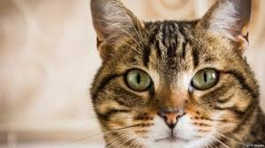
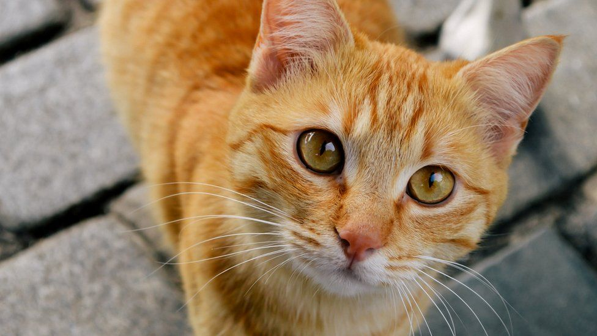

Люся
1 год | серый


Ко́шка, или дома́шняя ко́шка (лат. Félis silvéstris cátus), — домашнее животное, одно из наиболее популярных[1] (наряду с собакой) «животных-компаньонов»[2][3][4]. С точки зрения научной систематики, домашняя кошка — млекопитающее семейства кошачьих отряда хищных. Ранее домашнюю кошку нередко рассматривали как отдельный биологический вид.